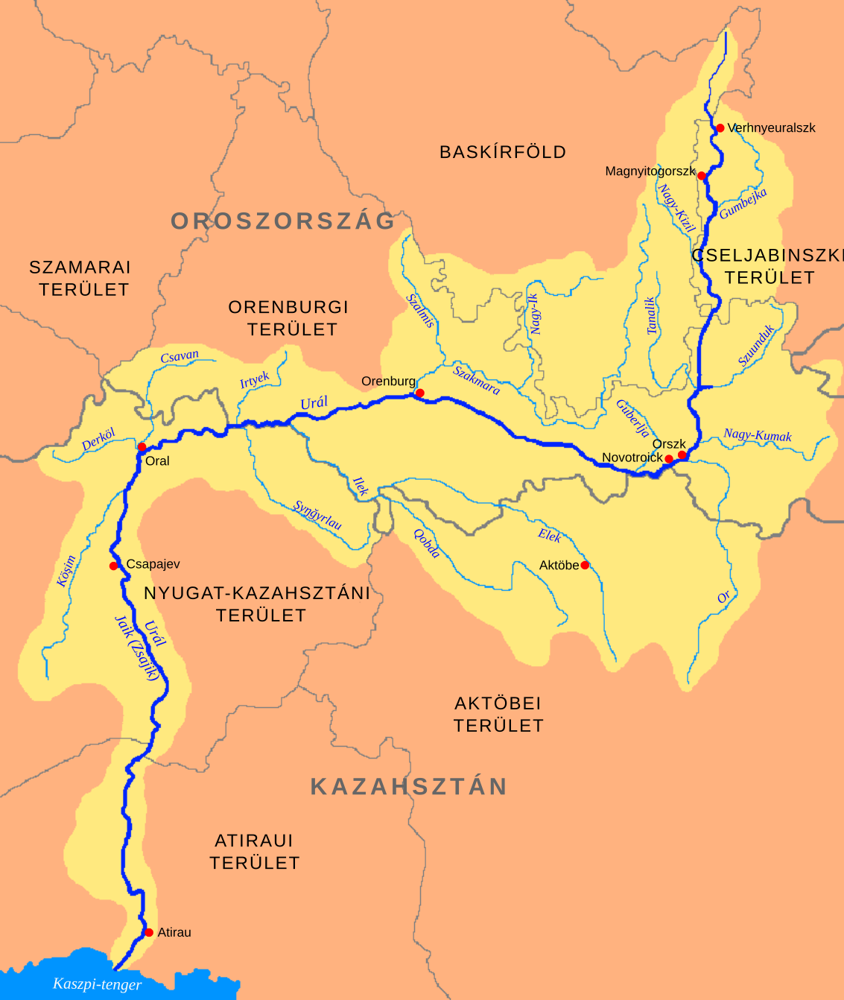

Urál
Az Urál Oroszország és Kazahsztán területén található folyó,
amely az Urál-hegység déli részén ered.
A folyó mintegy 2428 kilométer hosszú, és a Kaszpi-tengerbe
ömlik. Az Urál fontos szerepet játszik a környező területek
vízellátásában és gazdaságában.
Az Urál folyó érdekessége, hogy a hagyományos földrajzi
felosztás szerint részben az Európa és Ázsia közötti
határvonalat alkotja.
A folyó környékén változatos természeti környezet található,
amely számos növény- és állatfajnak biztosít élőhelyet.
Az Urál fontosabb adatai
| Országok |
Oroszország, Kazahsztán |
| Hossz |
2428 km |
| Forrásszint |
850 m |
| Vízhozam |
400 m³/s |
| Vízgyűjtő terület |
231 000 km² |
| Forrás |
Déli-Urál |
| Torkolat |
Kaszpi-tenger |
Érdekességek az Urál folyóról
Az Urál folyó különlegessége, hogy két kontinenshez is
kapcsolódik. A folyó egy része Európában, másik része
pedig Ázsiában található.
A folyó mentén több település is kialakult.
Vizét a mezőgazdaságban és a halászatban is hasznosítják.
Az Urál a Kaszpi-tengerbe ömlő fontos folyók egyike.
